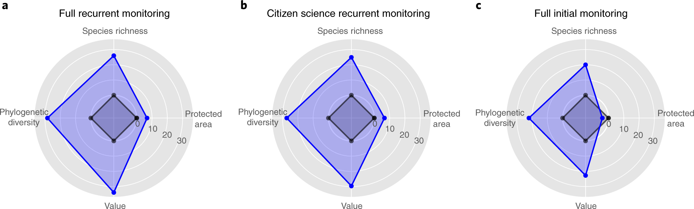
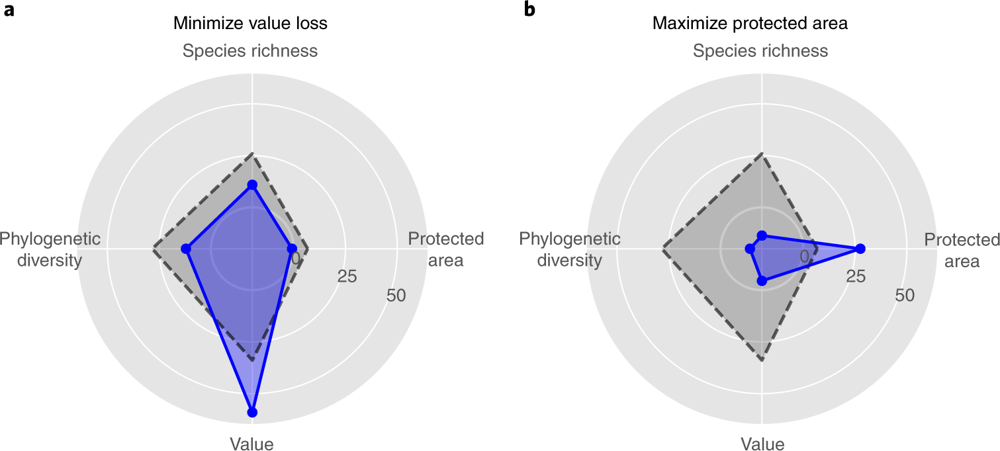
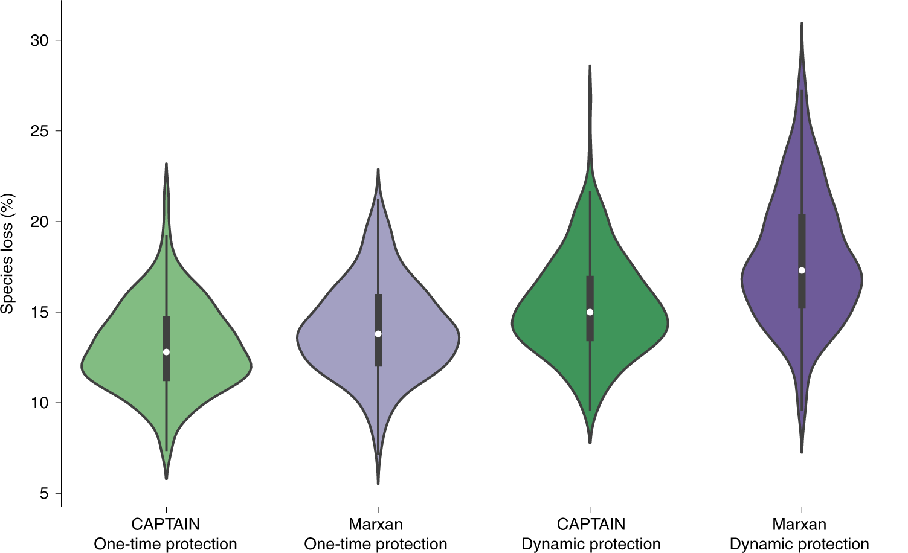
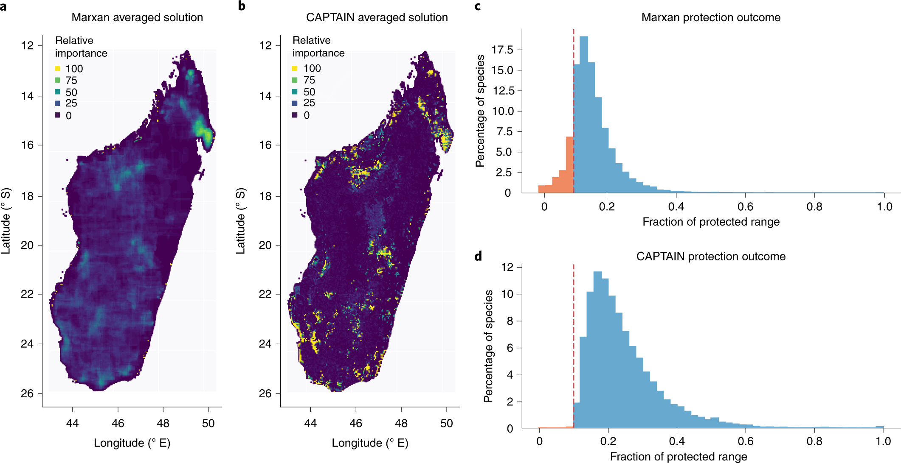

Improving biodiversity protection through artificial intelligence
Nature Sustainability · 2022 · 优先阅读
把生态过程、监测信息、预算和保护动作连成闭环；适合地球系统科学总框架。
许可：CC BY 4.0。分区详见 筛选依据，未宣称已核验中科院一区。
Fig. 1 生态过程怎样成为决策环境
用途： MDP 框架。
画法借鉴： 先画生态状态和人类扰动，再画观测、预算与保护行动；将动态模拟器与策略网络分层。
解释边界： 观测到的物种信息不等于完整生态状态。

Silvestro, Daniele; Goria, Stefano; Sterner, Thomas; Antonelli, Alexandre. Improving biodiversity protection through artificial intelligence. Nature Sustainability (2022), Fig. 1. https://doi.org/10.1038/s41893-022-00851-6. CC BY 4.0. 未裁切、未重绘；按比例显示。
Fig. 2 监测信息改变保护成效
用途： 观测与信息。
画法借鉴： 并排比较监测频率和观测精度，让信息条件成为实验变量。
解释边界： 面积、物种和价值不是同一指标，不能只看雷达图面积。

Silvestro, Daniele; Goria, Stefano; Sterner, Thomas; Antonelli, Alexandre. Improving biodiversity protection through artificial intelligence. Nature Sustainability (2022), Fig. 2. https://doi.org/10.1038/s41893-022-00851-6. CC BY 4.0. 未裁切、未重绘；按比例显示。
Fig. 3 政策目标与生态结果的权衡
用途： 多目标权衡。
画法借鉴： 固定环境与预算，只改变优化目标，展示各生态指标随之变化。
解释边界： 多个目标设置的对比不自动构成完整 Pareto 前沿。

Silvestro, Daniele; Goria, Stefano; Sterner, Thomas; Antonelli, Alexandre. Improving biodiversity protection through artificial intelligence. Nature Sustainability (2022), Fig. 3. https://doi.org/10.1038/s41893-022-00851-6. CC BY 4.0. 未裁切、未重绘；按比例显示。
Fig. 5 重复模拟的分布式比较
用途： 性能比较。
画法借鉴： 用小提琴图保留不同模拟中的离散程度，同时标出中位数和四分位。
解释边界： 模拟重复、随机种子和独立研究区的统计含义不同。

Silvestro, Daniele; Goria, Stefano; Sterner, Thomas; Antonelli, Alexandre. Improving biodiversity protection through artificial intelligence. Nature Sustainability (2022), Fig. 5. https://doi.org/10.1038/s41893-022-00851-6. CC BY 4.0. 未裁切、未重绘；按比例显示。
Fig. 6 空间优先级与保护覆盖
用途： 空间决策。
画法借鉴： 同一地图范围展示候选方法，再接物种覆盖分布；从空间模式走向结果。
解释边界： 优先级是入选频率，不是保护带来的因果收益。

Silvestro, Daniele; Goria, Stefano; Sterner, Thomas; Antonelli, Alexandre. Improving biodiversity protection through artificial intelligence. Nature Sustainability (2022), Fig. 6. https://doi.org/10.1038/s41893-022-00851-6. CC BY 4.0. 未裁切、未重绘；按比例显示。